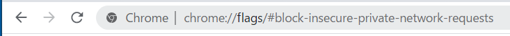
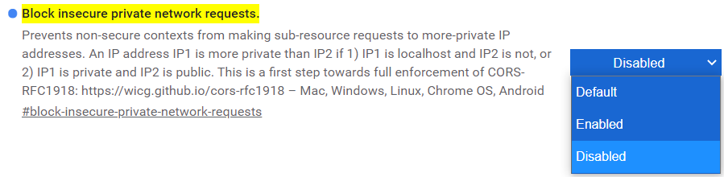
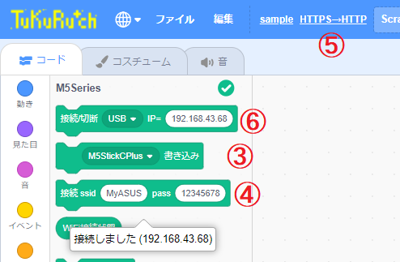
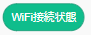
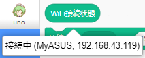
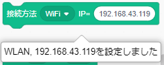
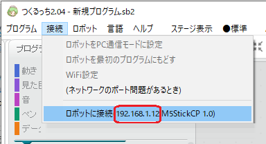

つくるっちアプリ
アプリ
- for USB接続：https://sohta02.sakura.ne.jp/tukurutch/ （サンプル一覧）
- for WiFi接続：http://sohta02.sakura.ne.jp/tukurutch/ （サンプル一覧）
- つくるっちは小学生から大人までのプログラミング学習と電子工作を目的に、そーたメイが開発したスクラッチ3.0ベースのオープンソース、フリーウェアのプログラミング環境です。ArduinoIDEのようなオープンソースソフトウェアによる様々なマイコンと周辺デバイス対応を目指しています。
対応マイコン uno、microbitV1、GroveBeginnerKit、ESP32、
M5Stack、M5StickC、M5Atom、M5Camera、TimerCam対応OS Windows10、MAC、chromeOS、android(解像度1050x650以上)
（要chromeブラウザ）接続方式 USB、WiFi、Bluetooth
セットアップ
- chromeブラウザ(chrome89)でカメラ画像を表示するためにchromeブラウザの設定を変更する必要があります。
下記アドレスをコピー。
- ブラウザのアドレスバーに貼り付けて開く。
 - [Disabled] を選択。
 - デバイスをUSBでPCに接続、つくるっちhttps にアクセスし拡張機能 からマイコン拡張を選択。
- ファームウェア書き込み： マイコンを選択して [書き込み] をクリック。
- WiFi設定：SSIDとパスワードを入力して [接続 ssid] をクリック。成功するとアプリにIPアドレスが記録されます。
- HTTPアクセス： WiFiで接続するために [HTTPS→HTTP] をクリック。
- 接続： もう一度マイコン拡張を選択し、④のIPアドレスが⑥に設定されていることを確認、[接続/切断] をクリックしてデバイスと接続。

- もう一度IPアドレスを確認・設定するときはUSB接続で つくるっちhttps にアクセスし、を押して下さい。
WiFiで接続できないとき
- 現在Chromeブラウザのみ対応です、Firefox/Edge/Safariブラウザでは動作しません。
- USB接続でIPアドレスを確認＆再設定
USBで接続、つくるっちhttps にアクセスしマイコン拡張を選択し、[WiFi接続状態] をクリックして接続状態を確認して下さい。マイコンのIPアドレスが変わった場合はパソコン/タブレットのcookieに保存されたマイコンIPアドレスを更新します。

- 本体LCDでIPアドレスを確認＆再設定 (M5StickCなど)
M5Stack、M5StickCはWiFi接続に成功すると本体LCDに 192.168.1.123 のようにIPアドレスが表示されます。つくるっちhttp にアクセスして直接IPアドレスを設定します。

- つくるっちexe版 でIPアドレスを確認
※[ロボットに接続]を選択しないで下さい
